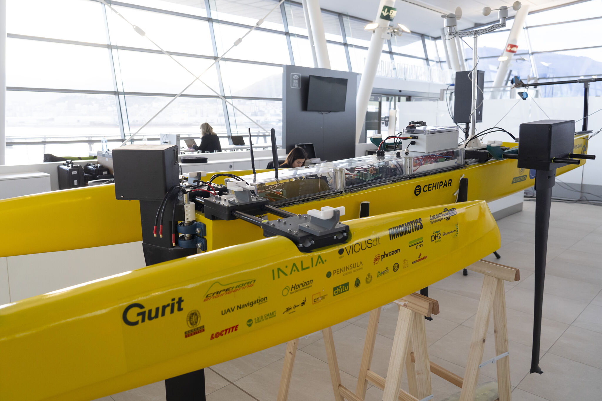

Trabajo con rigor cuando el proceso lo exige y con velocidad cuando el contexto lo demanda.
Mi foco es construir soluciones que funcionan, que escalan y que aportan valor real.
14Personas coordinadas en el equipo técnico más grande
100+Estudiantes formados en programación
Acreditaciones
Títulos y certificados
Sobre mí
Un perfil hecho para dos velocidades
Un perfil hecho para dos velocidades.
Soy Guillermo Santos, desarrollador backend formado en Java, C/C++ y Docker. Empecé en la programación por pura curiosidad; con el tiempo, esa curiosidad se convirtió en una forma de trabajar: entender, estructurar y construir con intención.
La docencia me enseñó a explicar y a dividir problemas sin perder precisión, una habilidad que aplico cada vez que diseño un sistema. Cuando no estoy programando, dibujo, hago música o experimento con robótica.
Mi trabajo combina estructura cuando hace falta y rapidez cuando el producto lo pide.
Rigor
Estructura clara, documentación útil y trazabilidad real en cada entrega.
Velocidad
Prototipos funcionales desde el inicio; refinamiento cuando aporta valor.
Agrupadas por lo que aportan: gobernanza cuando el riesgo lo exige, velocidad cuando el mercado no espera.
Rigor & EstructuraSistemas que no pueden fallar
Java
Spring Boot
C / C++
MySQL
PostgreSQL
Flask
Docker
Velocidad & EjecuciónDel prototipo al usuario
JavaScript
HTML
CSS
Python
React Native
Flutter / Dart
Soporte transversalProceso, hardware y despliegue
SCRUM
GitLab
Maven
Arduino / ESP32
MQTT
Google Apps Script
Vercel
Proyectos
Reto → Restricciones → Intervención → Resultado
Nueve sistemas, un mismo método. Ordenados por calibre técnico y evaluación, no por fecha. Despliega cada caso para ver el detalle completo.
Proyectos insignia
Los de mayor complejidad técnica y mejor evaluados.
Reto de negocio
Sostener rutinas de concentración y descanso es difícil con una app más en el móvil: se necesitaba un apoyo físico, no solo digital, que acompañara al usuario en tiempo real.
Restricciones
Trabajo de Fin de Grado con un único desarrollador y plazo académico fijo: había que integrar hardware propio, app móvil y backend en un sistema coherente de extremo a extremo.
Intervención estratégica
Ecosistema de tres capas: dispositivo con ESP32 y una máquina de estados en C++ (temporizador Pomodoro e hitos), app móvil en React Native/Expo y backend en Flask + PostgreSQL, comunicados en tiempo real vía MQTT con autenticación propia y Google, todo containerizado con Docker.
Resultado cuantificable
Trabajo de Fin de Grado calificado con 10/10. Sistema funcional de extremo a extremo — de la placa electrónica al backend — con guía de instalación entregada.
Reto de negocio
Un equipo de soporte técnico sin sistema propio para registrar, asignar y medir incidencias de clientes, dependiendo de procesos manuales dispersos.
Restricciones
Proyecto académico en equipo con plazo cerrado: debía cubrir empleados, clientes, tickets y estadísticas con control de acceso por rol, y el backend tenía que sostener esas reglas de negocio sin ambigüedad.
Intervención estratégica
Frontend con dashboard de empleados, clientes y tickets, asignación dinámica de incidencias y paneles de estadísticas. Por debajo, una API REST propia en Spring Boot con arquitectura en capas — controller, servicio, repositorio, DTO y mapper por cada entidad — sobre MySQL con JPA/Hibernate. El estado de cada ticket (abierto, pendiente, cerrado) y el rol de cada usuario (cliente o empleado) se modelan como enumerados validados en el propio dominio, no en el frontend.
Resultado cuantificable
Proyecto calificado con 10/10: sistema funcional de extremo a extremo, con una API documentada por entidad (tickets, clientes, empleados, departamentos, macros de respuesta y estadísticas) y separación estricta entre lógica de negocio y exposición HTTP.
Herramientas en producción
Nadie las evalúa con una nota: las usa gente real, cada semana.
Reto de negocio
Cada semana, el equipo del campamento invertía horas clasificando manualmente a los campistas por edad y grupo, y formando equipos para las actividades de tarde en una hoja de cálculo.
Restricciones
Debía usarla personal no técnico durante el propio campamento, sin conexión estable garantizada y sin presupuesto de infraestructura.
Intervención estratégica
Aplicación web con árbol de decisión para clasificar campistas automáticamente, generación de equipos equilibrados por edad y grupo, y base de datos PostgreSQL desplegada en Vercel — sustituyendo la hoja de cálculo manual.
Resultado cuantificable
~5 horas de trabajo manual eliminadas cada semana. Herramienta en uso real por el equipo del campamento.
Reto de negocio
El inventario de material se llevaba en una hoja de Google Sheets actualizada a mano, sin visibilidad rápida de qué había disponible, en uso o roto.
Restricciones
Debía funcionar desde el móvil sin instalar nada, y el equipo ya trabajaba sobre Google Sheets como fuente de datos: no había margen para migrar de sistema.
Intervención estratégica
Interfaz web ligera de un solo archivo, conectada a Google Sheets vía Apps Script, con acciones rápidas de entrada, baja, uso, liberación y reparación de material, optimizada para uso táctil.
Resultado cuantificable
Consulta y actualización del inventario en segundos desde cualquier móvil, sin mantener una hoja de cálculo abierta ni duplicar el registro.
Proyectos académicos y de práctica
Base técnica: de aquí sale el resto.

Reto de negocio
El equipo de competición necesitaba telemetría fiable en tiempo real entre la embarcación y el puesto de control, sin margen de error durante la regata.
Restricciones
Hardware embebido de recursos limitados (ESP32), línea serie propensa a ruido (RS-232) y cero tolerancia a reinicios del sistema en carrera.
Intervención estratégica
Protocolo de comunicación serial en C, contenedorizado con Docker para garantizar entornos reproducibles, con manejo de errores y reconexión automática.
Resultado cuantificable
Transmisión estable durante toda la competición: 0 pérdidas de señal reportadas por el equipo técnico.
Simular el flujo completo de un punto de venta — tienda, administración y gestión — como ejercicio de aprendizaje multiplataforma.
Restricciones
Ejercicio de práctica con alcance y tiempo acotados por el temario, sin datos ni backend reales.
Intervención estratégica
App Flutter con tres módulos (Tienda, Administración, Manager), catálogo de productos por categoría y carrito de compra, pensada para Android, iOS y escritorio desde una única base de código.
Resultado cuantificable
Ejercicio calificado con 8/10: base sólida de Flutter multiplataforma, el proyecto de menor alcance de este conjunto.
Trayectoria
Formación y puestos de trabajo
Puesto de trabajoFormación
Formación
Ingeniería Telemática y Electrónica
Universidad Politécnica de Madrid (UPM). 180 ECTS cursados: redes TCP/IP, programación (C/Java) y electrónica analógica/digital.
CJavaTCP/IPElectrónica
Puesto
Jefe de Equipo Técnico — FGUPM Campamento Tecnológico UPM
Coordinación de un equipo de 7 personas en el diseño y despliegue de proyectos educativos tecnológicos. Ciclos de entrega cortos y seguimiento diario (Daily Scrum).
ScrumDaily ScrumLiderazgo técnico
Puesto
Técnico de Control y Telemetría — Green Foaling Spain UPM
Implementación de sistemas de recolección de datos y resolución de incidencias críticas en la transmisión de señal telemétrica, con metodología Scrum.
TelemetríaRS-232Scrum
Formación
Grado Superior en Desarrollo de Aplicaciones Multiplataforma (DAM)
Especialización en Java Spring Boot, desarrollo móvil (Kotlin/Flutter), bases de datos SQL, APIs REST y metodologías ágiles. Proyecto de Fin de Grado calificado con 10: FocusBot, un sistema IoT integral con dispositivo físico, app multiplataforma y servidor Flask sobre MQTT.
Spring BootKotlinFlutterREST APIsMavenPythonEclipse IDEOdooHTML5CSSJava ScriptMVCDTOsDAOJDBCJUnitSQLMongoDBAJAXSwingVirtual MachinesRedes TCP/IP
Puesto
Analista de Datos (Prácticas) — Road To Data
Diseño y orquestación de flujos ETL para integrar múltiples orígenes de datos con el ecosistema de Palantir Foundry. Cuadros de mando interactivos que traducen datos técnicos en visualizaciones estratégicas de negocio.
Jefe de Área de Tecnología y Robótica — FGUPM Campamento Tecnológico UPM
Coordinación operativa de un equipo técnico de 14 personas (incluida la tutorización de 4 perfiles en prácticas) para la ejecución de 13 talleres. Desarrollo de 2 aplicaciones web (Supabase/PostgreSQL) para inventario y registro de participantes, con un ahorro equivalente a una jornada laboral completa. Dirección técnica de 5 proyectos de robótica (ESP32/Arduino) sobre datos biosféricos y optimización energética.
SupabasePostgreSQLESP32Liderazgo de 14 personas
Contacto
Hablemos de tu próximo reto
Toda entrega, aunque sea un formulario, se valida antes de enviarse.